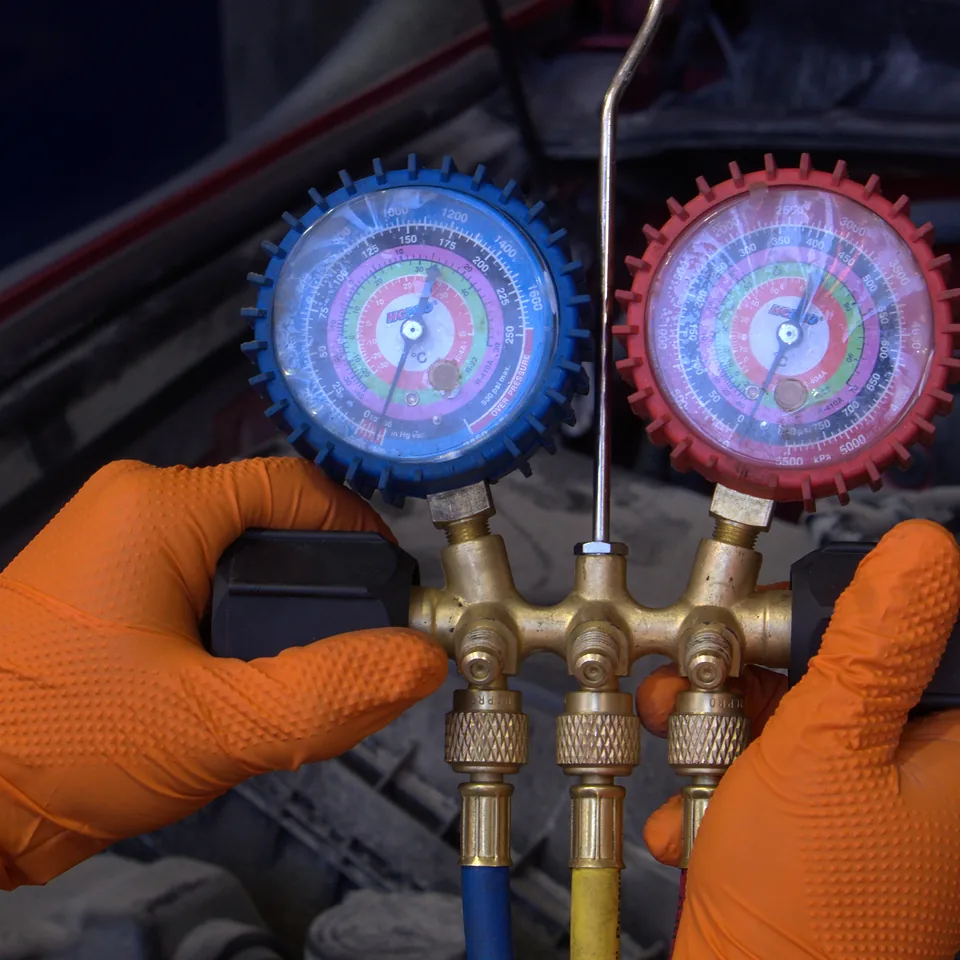

Formación en Aire Acondicionado Automotriz: Nivel Básico a Avanzado
Aprende desde cero con un método paso a paso diseñado para mecánicos y técnicos que desean aumentar sus ingresos o iniciar su propio negocio.
Antes $155.000 · ahora $60.000 pesos chilenos · pago único
- Diagnosticar fallas correctamente.
- Utilizar herramientas profesionales.
- Realizar vacío correctamente.
- Detectar fugas.
- Cargar refrigerante.
- Interpretar presiones.
- Reparar sistemas de climatización.
- Cobrar por un servicio altamente rentable.
- Eres mecánico pero debes rechazar trabajos de aire acondicionado.
- Tus clientes terminan llevándose ese trabajo a otro taller.
- Has visto videos en YouTube pero nadie explica el proceso completo.
- Te gustaría aumentar tus ingresos sin depender únicamente de la mecánica tradicional.
- Quieres emprender pero no sabes por dónde comenzar.
No necesitas experiencia previa en aire acondicionado: se parte desde cero.
- 01 Herramientas básicas
- 02 Herramientas avanzadas
- 03 Insumos básicos
- 04 Función de las herramientas
- 05 Conceptos de refrigeración
- 06 Circuito de aire acondicionado automotriz
- 07 ¿Cómo identificar la conexión del manómetro?
- 08 ¿Cómo cargar refrigerante a los sistemas?
- 09 Funciones del multímetro
- 10 Factores claves para una carga correcta
- 11 ¿Cómo funcionan los presostatos?
- 12 Componentes eléctricos y funciones
- 13 Tipos de compresores
- 14 Válvulas de expansión
- 15 Tipos de sellos para el circuito
- 16 Aceite para sistemas de refrigeración
- 17 Soldadura de aluminio
- 18 Prensado de mangueras
- 19 ¿Cómo hacer el cambio de un compresor?
- 20 ¿Cómo cambiar bobinas de los compresores?
- 21 ¿Cómo cambiar condensador?
- 22 ¿Cómo cambiar válvulas de servicio?
- 23 ¿Cómo cambiar filtro polen?
- 24 ¿Cómo hacer pruebas de fugas?
- 25 Fallas comunes en los circuitos
Garantía de 7 días: aprende sin riesgo. Cuentas con 7 días de garantía para conocer el contenido del curso y comprobar si realmente es lo que estás buscando. Si dentro de este período consideras que el curso no cumple con tus expectativas, podrás solicitar la devolución y recibirás el 100% de tu dinero de vuelta, de acuerdo con las condiciones de garantía aplicables.
¿Necesito experiencia previa en aire acondicionado automotriz?
No. El curso está diseñado para personas que tienen conocimientos de mecánica, pero que quieren aprender aire acondicionado automotriz desde cero. Comenzaremos con los conceptos fundamentales y avanzaremos progresivamente hasta procedimientos más avanzados.
¿Cuánto dura el curso?
El curso cuenta con más de 6 horas de contenido grabado, que podrás estudiar a tu propio ritmo y desde cualquier lugar.
¿Desde qué país puedo estudiar?
Puedes realizar el curso desde cualquier país. Solo necesitas conexión a Internet y un computador, tablet o teléfono para acceder al contenido.
¿Necesito comprar herramientas antes de comenzar?
No es necesario. Puedes comenzar estudiando el contenido sin tener todas las herramientas. Durante el curso conocerás qué herramientas necesitas, para qué sirve cada una y cómo utilizarlas correctamente.
¿Las clases quedan grabadas?
Sí. Todas las clases quedan disponibles para que puedas estudiarlas a tu propio ritmo. Tendrás acceso al contenido y podrás volver a revisarlo cuando lo necesites.
¿Recibo certificado?
Sí. Al completar la capacitación podrás obtener tu certificado de participación, de acuerdo con las condiciones establecidas para el curso.
¿Qué pasa si tengo dudas durante el curso?
No estarás solo. Contarás con asesoría personalizada del profesor para resolver tus dudas y orientarte durante tu proceso de aprendizaje. La idea es que puedas avanzar con mayor seguridad y no quedarte estancado cuando algo no te quede claro.